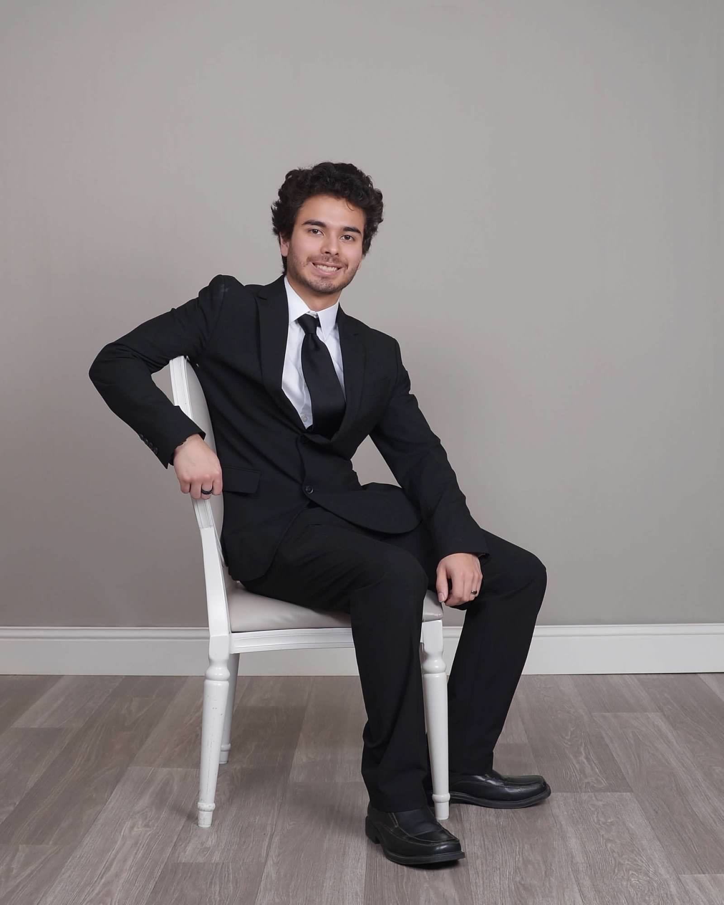
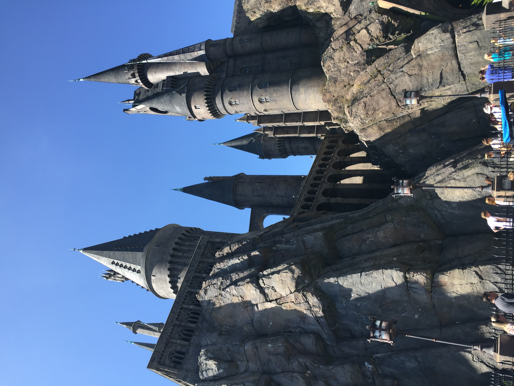
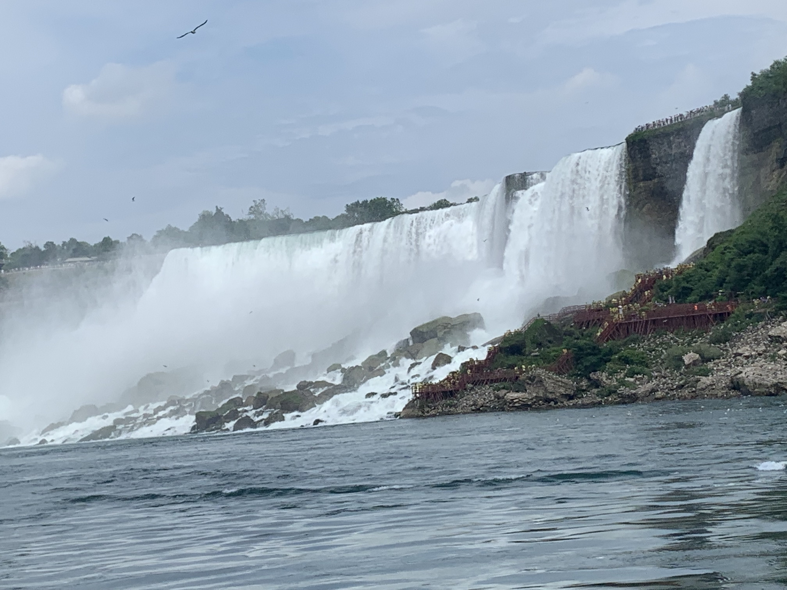
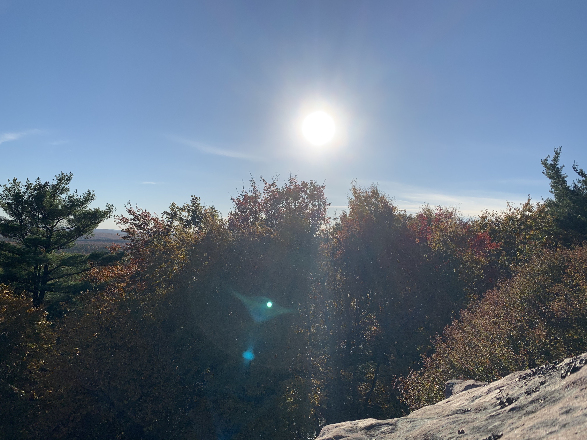
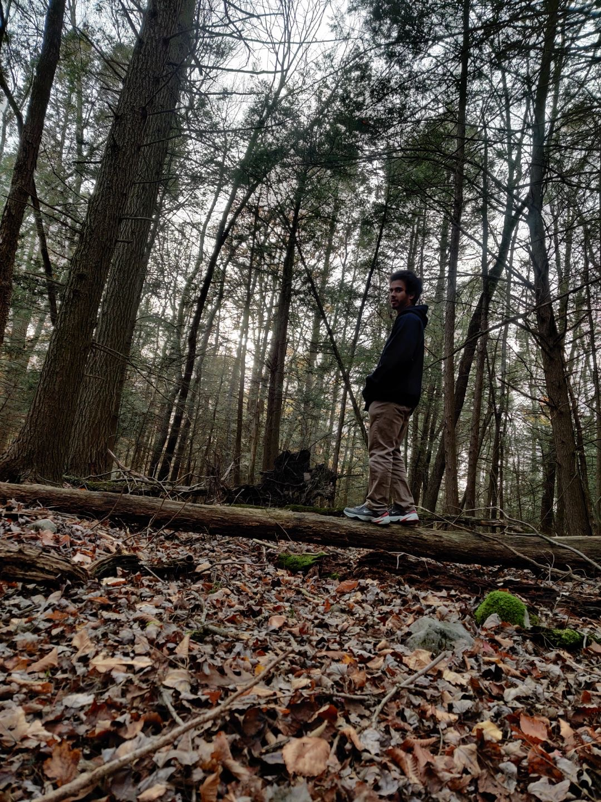
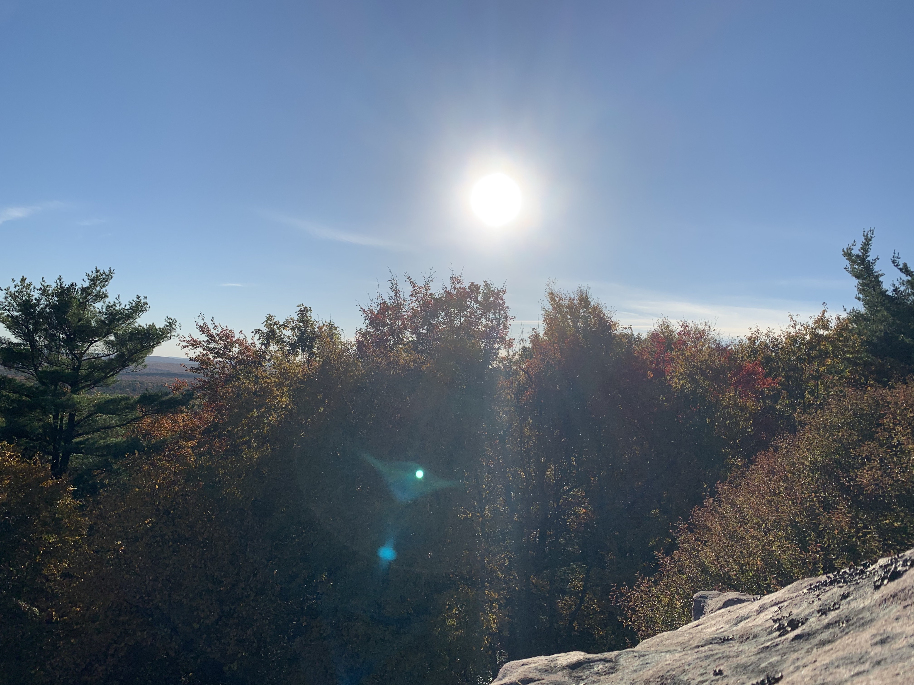
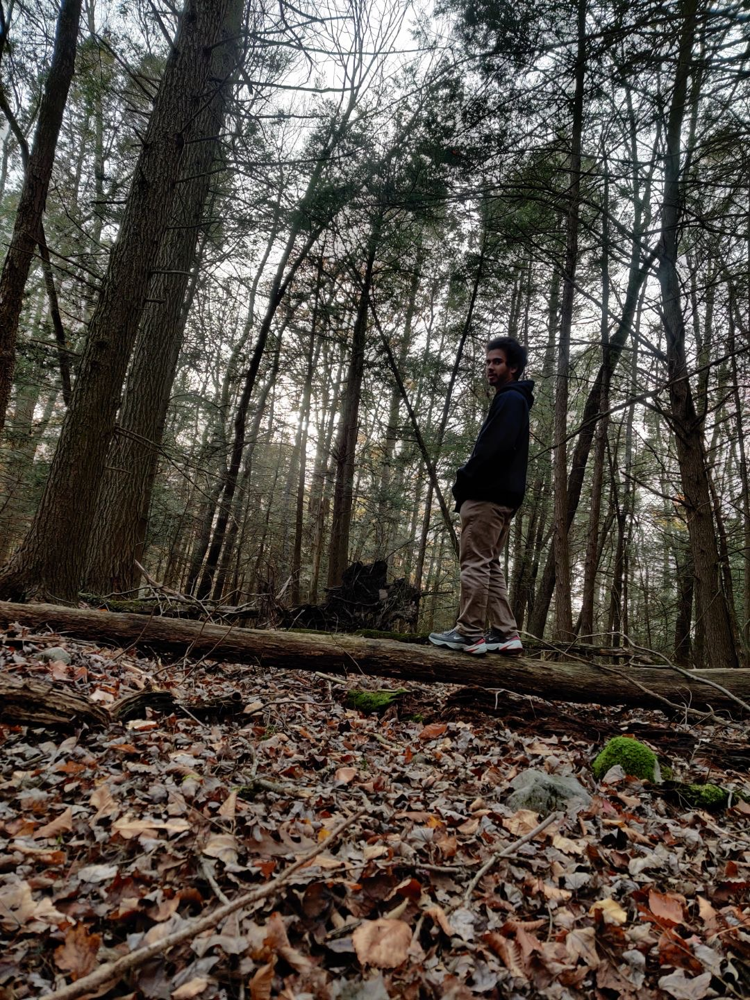
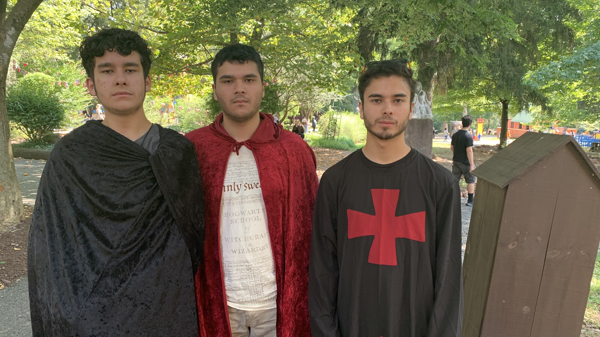
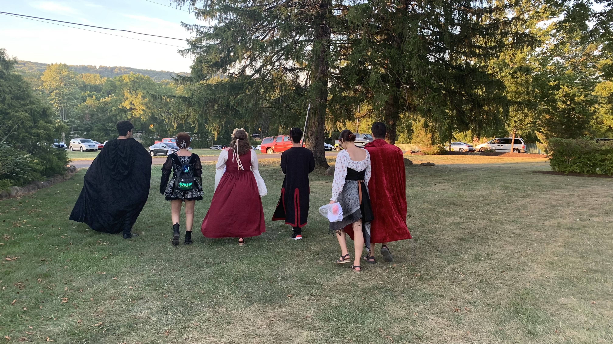
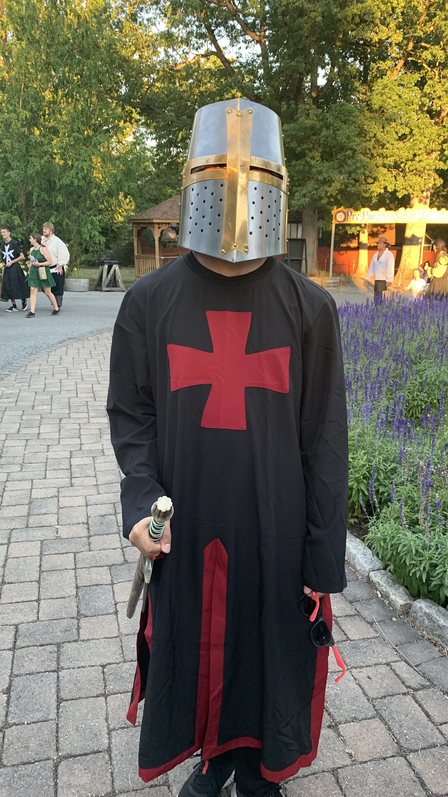

About Me

To begin, my name is Kevin Louis Jusino
I am the second of three children in my family, being born in May 2001.
I love to spend my free time doing many things, including but not limited to:
• Working on projects like my website or small projects on LeetCode.• Playing video games on my computer or switch.
• Going on hikes up mountains or exploring new areas.
• Going to the park to play with friends or get some exercise.
• Watching movies, shows, and anime.
I love to travel with family and friends to differnent placces, although I've never been outside the United States. I have visted most of the states along the East Coast and been to popular attractions such as Universal Studios Florida, Niagra Falls, and Long Island, NY.



I mainly hike around local trails in the area, espeically in the Pocono Mountains. My friends will sometimes do hike that take half a day to complete, spanning over several miles. The views are always worth the effort.
 



In 2022, I went to my first ever Renaissance Fair. Although I didn't know what to expect, it was very fun and exciting to watch the plays and reenactments. I also got to dress up and go with my friends and family.
  
I love to program and develop projects, as nothing beats the feeling of having a working result. My most recent project has been this website you are navigating, as this is using both knowledge I have learned from my university courses as well as self-taught mechanics and processes.
My goal is to find a career that will let me reach my full potential and support me along the way to improve my computer science and development skills.